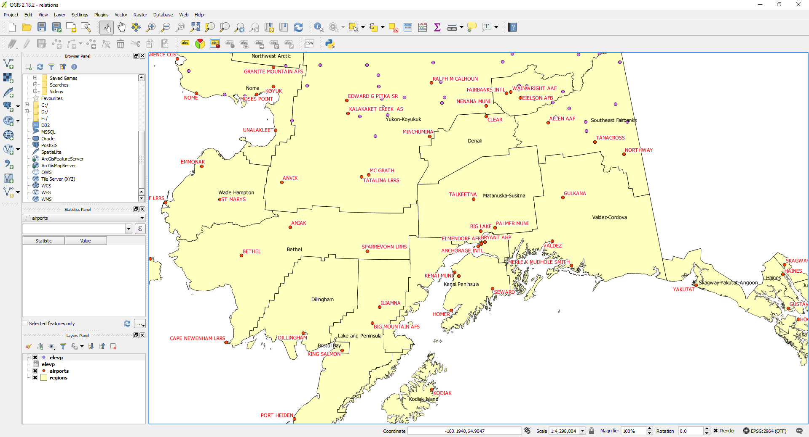

Unit I - Precision Farming
Precision Agriculture and Agricultural Management
Precision agriculture is an advanced agricultural management concept that involves using technology to monitor and optimize crop production. It includes practices that make use of data analysis, high-precision equipment, and information technology to manage farms more efficiently and sustainably.
This approach helps in monitoring crop health, soil conditions, and other variables to improve crop yield and reduce resource waste. The goal of precision agriculture is to optimize field-level management based on crop variability.
Ground-based Sensors
Ground-based sensors are devices placed in the field to collect real-time data about soil moisture, temperature, nutrient levels, and other environmental conditions. These sensors provide farmers with essential data that helps them make informed decisions about irrigation, fertilization, and other farming practices.
By using ground-based sensors, farmers can reduce waste and improve crop growth by applying resources where and when they are needed the most.
Remote Sensing
Remote sensing involves gathering information about an area from a distance, often using satellite or drone imagery. In agriculture, remote sensing can be used to assess crop health, soil quality, and environmental conditions across large areas. It helps in detecting pests, diseases, and nutrient deficiencies in crops early on.
This technology allows for large-scale monitoring and enables farmers to manage their fields more effectively, even in hard-to-reach locations.

GPS (Global Positioning System)
GPS technology is essential in precision farming, providing accurate location data for various agricultural applications. GPS enables farmers to track the exact location of their equipment, map field boundaries, and create variable rate application maps for seeding and fertilization.
The integration of GPS technology into farming practices has greatly improved efficiency, allowing for precise application of inputs and reducing overlaps in field operations.
GIS and Mapping Software
Geographic Information System (GIS) and mapping software are tools that enable farmers to visualize and analyze field data. GIS combines data collected from GPS and sensors to create detailed maps of soil characteristics, crop health, and yield patterns.
These maps help farmers make data-driven decisions on resource allocation, planting schedules, and more. GIS software provides a comprehensive view of the farm and can be used to manage crop rotation and soil health.
Yield Mapping Systems
Yield mapping systems collect and analyze data on crop yield during harvest. Using sensors and GPS, these systems record the amount of crop harvested in specific locations within a field. This information is used to create yield maps that reveal variability in crop production.
By studying yield maps, farmers can identify patterns and make adjustments in their management practices to improve yield in future seasons.

Crop Production Modeling
Crop production modeling involves using mathematical models to simulate crop growth and predict yields based on variables such as soil conditions, weather, and management practices. Models help farmers estimate yields, plan for resource needs, and adjust practices to optimize crop production.
This modeling helps in making predictions about the best planting times, expected harvest periods, and the likely impact of environmental changes on crops.